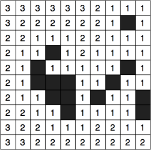
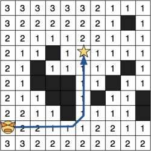
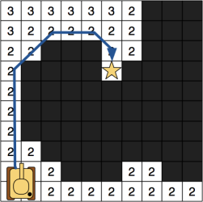
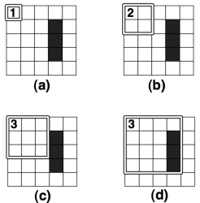
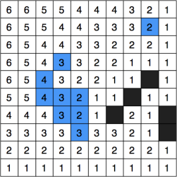
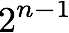
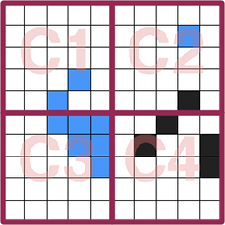
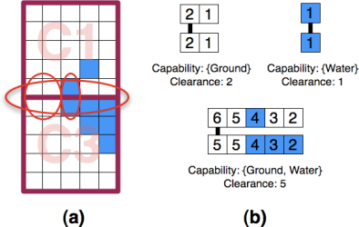
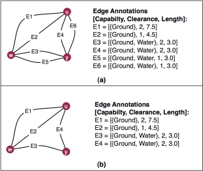
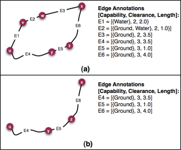

Real-time strategy (RTS) games often feature a wide number unit types for the player to control. One of my favourite titles from the past, Westwood's seminal Red Alert, had many classes of differently sized units: small infantry soldiers, medium-sized Jeeps and large tanks. In Red Alert 3, the most recent incarnation of the series, the diversity is increased even further by the introduction of units with terrain-specific movement capabilities (Figure 1). From a pathfinding perspective this introduces an interesting question: how can we efficiently search for valid routes for variable-sized agents in rich environments with many types of terrain?
This was the topic of a recent paper [1] I co-wrote with Adi Botea and which I presented at CIG'08. In the talk I outlined Hierarchical Annotated A* (HAA*), a path planner which is able to efficiently address this problem by first analysing the terrain of a game map and then building a much smaller approximate representation that captures the essential topographical features of the original. HAA* works by using a distance-to-obstacle metric to calculate the amount of clearance (or free space) at each tile in a grid environment. This simple method is the basis for a hierarchical clearance-based pathfinding approach that is able to answer queries for many different types of units with distinct sizes and terrain traversal capabilities. HAA* is shown to be an order of magnitude faster than low-level A* search, produces near-optimal solutions and requires little memory overhead in practice.
In this article I want to outline the two major aspects of HAA*. First, I'll discuss how one can analyse a grid map to automatically extract clearance-related topographical information. Second, I'll explain how HAA* is able to use this information to build space-efficient abstractions that allow a range of agents with different sizes and terrain traversal capabilities to very quickly find a high quality path through a static multi-terrain environment.
Simply put, a clearance value is a distance-to-obstacle metric which is concerned with the amount of traversable space at a discrete point in the environment. Clearance values are useful because they allow us to quickly determine which areas of a map are traversable by an agent of some arbitrary size. The idea of measuring distances to obstacles in pathfinding applications is not a new one. The Brushfire algorithm [2] for instance is particularly well known to robotics researchers (though for different reasons than those motivating this article). This simple method, which is applicable to grid worlds, proceeds as so:
First, to each traversable tile immediately adjacent to a static obstacle in the environment (for example, a large rock or along the perimeter of a building) assign a value of 1. Next, each traversable neighbour of an assigned tile is itself assigned a value of 2 (unless a smaller value has already been assigned). The process continues in this fashion until all tiles have been considered; Figure 2 highlights this idea; here white tiles are traversable and black tiles represent obstacles (NB: The original algorithm actually assigns tiles adjacent to obstacles a value of 2; I use 1 here because it makes more sense for our purposes).
|

Figure 2. A small toy map annotated with values computed by the Brushfire algorithm. Black tiles are not traversable.
|

Figure 3. A 1x1 agent finds a path to the goal. All traversable tiles are included in the search space.
|

Figure 4. A 2x2 agent finds a path to the goal. Only tiles with clearance > 1 are considered.
|
Brushfire makes use of a minimum obstacle distance metric to compute clearances which works reasonably well in many situations. If we assume our agents (I use the term agent and unit interchangeably) are surrounded by a square bounding box we can immediately use the computed values to identify traversable locations from non-traversable ones by comparing the size of an agent with the corresponding clearance of particular tile. Figure 3 shows the search space for an agent of size 1x1; in this case, any tile with clearance equal to at least 1 is traversable. Similarly, in Figure 4 the search space is shown for an agent of size 2x2. Notice that the bigger agent can occupy much fewer locations on the map; only tiles with clearance values at least equal to 2. Because this approach is so simple it has seen widespread use, even in video games. At GDC 2007 Chris Jurney (from Relic Entertainment) described a pathfinding system [3] for dealing with variable-sized agents in Company of Heroes -- which happens to make use of a variant of the Brushfire algorithm (NB: this work actually takes a similar approach to HAA* but a direct comparison is difficult because the method is not outlined in great detail; nevertheless, it's quite a nice presentation.).
Unfortunately, clearances computed using minimum obstacle distance do not accurately represent the amount of traversable space at each tile. Consider the example in Figure 5; Here our 2x2 agent incorrectly fails to find a path because all tiles in the bottleneck region are assigned clearance values less than 2. To overcome this limitation we will focus on an alternative obstacle-distance metric: true clearance.
The process of measuring true clearance for a given map tile is very straightforward: Surround each tile with a clearance square (bounding box really) of size 1x1. If the tile is traversable, assign it an inital clearance of 1. Next, expand the square symmetrically down and to the right, incrementing the clearance value each time, until no further expansions are possible. An expansion is successful only if all tiles within the square are traversable. If the clearance square intersects with an obstacle or with the edge of the map the expansion fails and the algorithm selects another tile to process. The algorithm terminates when all tiles on the map have been considered. Figure 6 highlights the process and Figure 7 shows the result on our running example.
|

Figure 6. After selecting a tile (a) the square is expanded twice (b, c) before intersecting an obstacle (d).
|
Figure 7. The toymap from Figure 2, annotated with true clearance values.
|
Notice that by using true clearance the example from Figure 5 now succeeds in finding a solution. Infact, one can prove that using the true clearance metric it is always possible to find a solution for any agent size if a valid path exists to begin with (i.e. the method is complete; see [1] for details).
Until now the discussion has been limited to a single type of traversable terrain (white tiles). As it turns out however, it is relatively easy to apply any clearance metric to maps involving arbitrarily many terrain types. Given a map with n terrain types we begin by first identifying the set of possible terrain traversal capabilities an agent may possess. A capability is simply a disjunction of terrains used to specify where each agent can traverse. So, on a map with 2 terrains such as {Ground, Water} the corresponding list of all possible capabilities is given by a set of sets; in this case {{Ground}, {Water}, {Ground, Water}}. Note that, for simplicity, I assume the traveling speed across all terrains is constant (but this constraint is easily lifted).
Next, we calculate and assign a clearance value to each tile for every capability. Figures 8-10 show the corresponding clearance values for each capability on our toy map; notice that we've converted some of the black (obstacle) tiles to blue to represent the Water terrain type (which some agents can traverse).
|
Figure 8. True clearance annotations for the {Ground} capability (only white tiles are traversable).
|
Figure 9. True clearance annotations for the {Water} capability (only blue tiles are traversable).
|

Figure 10. True clearance annotations for the {Ground, Water} capability (both white and blue tiles are traversable).
|
Theoretically this means that, at most, each tile will store  clearance value annotations (here n corresponds to the number of terrains; see [1] for details). I suspect this overhead can probably be improved with clever use of compression optimisations though I did not attempt more than a naive implementation. Alternatively, if memory is very limited (as is the case with many robot-related applications) one can simply compute true clearance on demand for each tile, thus trading off a little processing speed for more space.
In order to actually find a path for an agent with arbitrary size and capability we can use the venerable A* algorithm [4] albeit with some minor modifications. First, we must pass two extra parameters to A*'s search function: the agent's size and capability. Next, we augment the search function slightly so that before a tile is added to A*'s open list we first verify that it is infact traversable for the given size and capability; everything else remains the same. A tile is traversable only if its terrain type appears in the set of terrains that comprise the agent's capability and if the corresponding clearance value is at least equal to the size of the agent. To illustrate these ideas I've put together a simplified pseudocode implementation of the algorithm, Annotated A*:
Function: getPath Parameters: start, goal, size, capability push start onto open list. for each node on the open list if current node is the goal, return path. else, for each neighbour of the newly opened node if neighbour is on the closed list, skip it else, if neighbour is already on the open list, update weights else, if clearance(neighbour, capability) > size, push neighbour on the open list else, skip neighbour push current node on closed list if openlist is null, return failure
If you're interested in playing with a working implementation of Annotated A* you can check out the source code I wrote to evaluate it. It's written in C++ and based on the University of Alberta's freely available pathfinding library, Hierarchical Open Graph (or HOG). HOG compiles on most platforms; I've personally tested it on both OSX and Linux and I'm told it works on Windows too. The classes of most interest are probably AnnotatedMapAbstraction, which deals with computing true clearance values for a map, and AnnotatedAStar which is the reference implementation of the search algorithm described here.
Having described a simple clearance-based pathfinding system we can now turn our attention to speeding it up through the use of hierarchical abstraction. The main problem here is that a multi-terrain map annotated with clearance values contains lots of topographical information but abstraction methods can only hope to approximate the original. Thus, the goal is to build an abstraction which is representationally complete i.e. if a path between two points can be found on the original annotated map, we should be able to also find it using only the abstract map. To achieve this we're going to attack the problem in 3 steps:
In order to create an an abstract representation of an annotated map we follow Botea et al [5] and divide the environment into a series of discrete square-sized areas called clusters. Figure 11 shows the result of this step on our running example using clusters of size 5x5.
|

Figure 11. The map is divided into four 5x5 clusters.
|

Figure 12. (a) Three entrances are identified between clusters C1 and C3, one for each possible capability. (b) Each transition point (denoted by a strong dark line) maximises clearance for a particular capability.
|
Next, we identify entrances between each pair of adjacent clusters. An entrance is defined as an obstacle-free area of maximal size that exists along the border between two clusters (Figure 12a). Each entrance has associated with it a transition point which reflects the fact that an agent can traverse from one cluster to the other. To this end we select from each entrance a pair of adjacent tiles, one from each cluster, which maximise clearance (Figure 12b). Each transition point is represented in the abstract graph by two nodes connected with a single inter-edge of weight 1.0. The inter-edge is also annotated with the corresponding capability and clearance value that reflect the traversability requirements of the transition point.
Finally, we complete the abstraction by finding all possible ways to traverse each cluster. We achieve this by running Annotated A* (AA*) between each pair of abstract nodes inside a cluster; one search for each combination of possible agent sizes and capabilities. Every time AA* successfully finds a path we add a new intra-edge between the start and goal nodes. The weight of the edge is equal to the length of the path and we further annotate it with the size and capability parameters used by AA* to reflect the traversability requirements of the path. This approach is highly effective at capturing all pertinent topographical details of the original map. Infact, it is easy to see that the resultant graph (which is termed an initial abstraction) is representationally complete since we've identified all possible transitions between each pair of adjacent clusters and all possible ways to traverse each cluster (Figure 13).
An interesting observation made during the abstraction-building process was that on many maps the same path was often returned by AA* when searching between the same pair of points with different sizes and capability parameters. This indicates that our abstract graph actually contains unnecessary or duplicated information (and is also needlessly large as a result). To solve this problem we're going to apply two edge dominance approaches to prune unnecessary nodes an edges. I want to avoid describing these ideas formally (the details are in [1]) and instead focus on the intuition behind each one.
The first, termed strong dominance, states that if two edges, both of identical length, connect the same pair of nodes and both are traversable by the same capability then we need only retain the one with the largest clearance. Figure 14 illustrates this idea. It is easy to see that using this approach preserves representational completeness; any agent able to traverse the edge with smaller clearance is also able to traverse the one with larger clearance. The resultant graph is termed a high-quality abstraction because we discard only duplicate information fromt the graph.
|

Figure 14. (a) Part of the initial abstraction for cluster C1. (b) Strong dominance removes edges E5 (dominated by E3) and E6 (dominated by E4).
|

Figure 15. (a) A graph with two inter-edges, E2 and E5. An agent traveling from "u" to "x" via E2 must both swim and walk whereas traveling via E5 only requires walking. (b) The dominated inter-edge, E2, and its endpoints, are removed.
|
The second approach, termed weak dominance, is focused on minimising the number of transitions between clusters. To achieve this the algorithm analyses pairs of inter-edges that connect the same two clusters and attempts to prove that if one is removed the representational completeness of the graph is maintained. The effect is that only transitions which are traversable by the largest number of agents are retained. This is similar to the way motorists frequently prefer to travel between locations via freeways, which are traversable by many kinds of vehicles, instead of opting for more direct offroad travel. Figure 15 illustrates this idea; again, it is easy to see that the application of weak dominance also preserves representational completeness. The resultant graph is termed a low-quality abstraction, to reflect the fact that some connectivity information is lost in the process (Figure 16).
Choosing which dominance technique to use will depend on the exact requirements of the target application. Empirical results have shown that in both cases the amount of memory required to store the abstract graph can be a small fraction of that required by the original map. (though the exact number depends on a range of factors which are discussed in [1]). Comparatively speaking, low quality abstractions can be more than 50% smaller than their high quality counterparts but there is a small tradeoff. In particular, high quality abstractions produce, on average, paths with lengths 3-5% longer than optimal while low quality abstractions are in the 6-10% range.
The process of finding a path using an abstract graph is a straightforward one that will be familiar to anyone who has come across the HPA* algorithm [5]:
As with Annotated A*, the search algorithm from Step 2 is modified slightly to accept two extra parameters: the agent's size and capability. In addition, the search function is also also augmented so that before a node is added to A*'s open list we first verify that it is infact reachable. In this case, a node is reachable only if the edge connecting it to the current node is traversable for the given size and capability parameters. The resultant algorithm is termed Hierarchical Annotated A* (HAA* for short).
As with other hierarchical planners, HAA* is shown to be very fast. I analysed its performance on a large set of problems (over 140K) using both small and large maps from Bioware's popular RPG Baldur's Gate. Since there are no similar pathfinding algorithms to measure against, it was contrasted with Annotated A*. In short, HAA* is an order of magnitude faster and, even with my naive, non-optimised implementation, it was able to find solutions to most problems in ~6ms on average (tested on my Core2 Duo 2.16GHz MacBook, running OSX 10.5.2 with 2GB of memory).
If you'd like to play with a working implementation of HAA*, you can download the source code I wrote to evaluate the algorithm. The classes most relevant to the preceeding few sections are probably AnnotatedCluster and AnnotatedClusterAbstraction which together are responsible for generating the abstract graph. Meanwhile, AnnotatedHierarchicalAStar provides a reference implementation of the HAA* algorithm.
So that about wraps things up. I hope this article will serve to highlight the usefulness of clearance-based pathfinding methods for efficiently dealing with the large diversity of both units and environments so often seen in modern video games. For more information on HAA* I suggest taking a look at the original paper [1] and associated presentation slides, both of which contain more indepth discussion of the ideas presented here.
Alternatively, if you have specific questions or comments regarding anything described in this article, please feel free to contact me.
[2] H. Choset, K. M. Lynch, S. Hutchinson, G. Kantor, W. Burgard, L. E. Kavraki and S. Thrun
Principles of Robot Motion, pp. 86-88
MIT Press (2004)
(google books entry)
[3] C. Jurney and S. Hubick
Dealing with Destruction: AI From the Trenches of Company of Heroes
Game Developers Conference (2007)
(presentation) (aigamedev.com mirror)
[4] P.E. Hart, N.J Nilsson, B. Raphael
A Formal Basis for the Heuristic Determination of Minimum Cost Paths
IEEE Transactions on Systems Science and Cybernetics (1968) Vol 4, Issue 2, pp. 100-107
(pdf via ieeexplore),
[5] A. Botea, M. Müller, J. Schaeffer
Near Optimal Hierarchical Path-Finding
Journal of Game Development (2004) Volume 1, Issue 1, 7-28
(pdf)